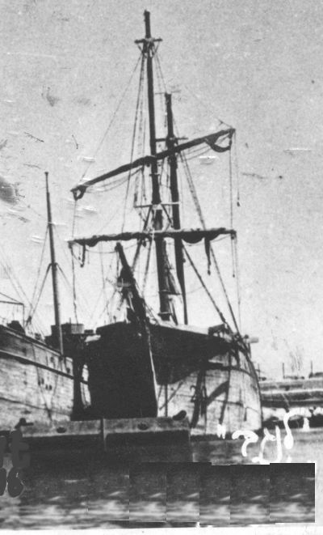
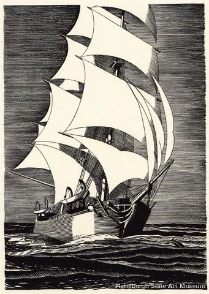
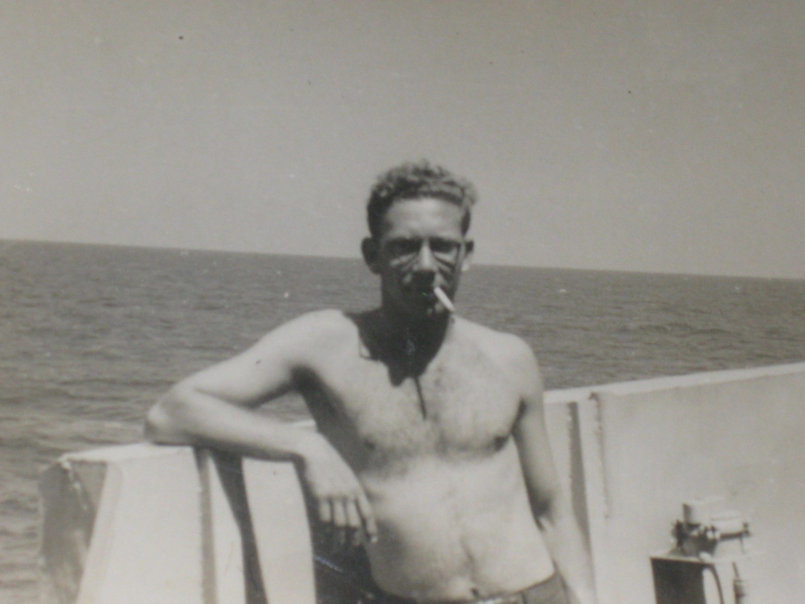
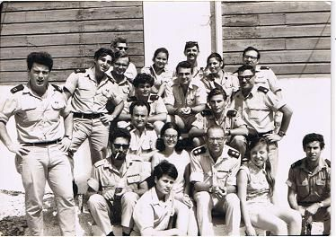
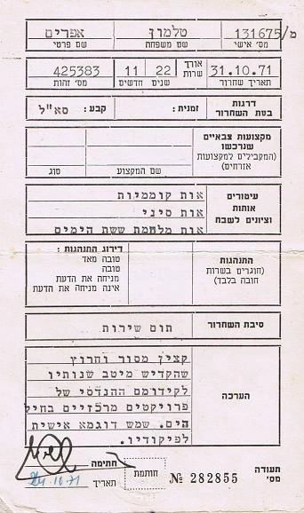
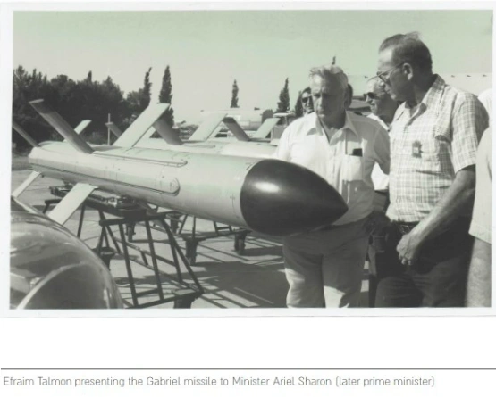
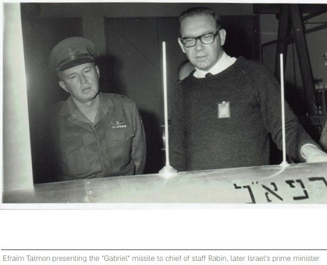
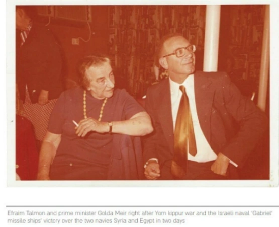
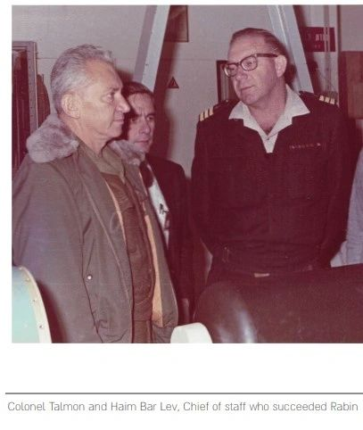

Career
The Ship's Captain

Efraim was a captain of the La'Negev (picture above – link in Hebrew), an immigrant ship bringing Jews from Europe to (then) the British mandate of Palestine after WWII. The link (in Hebrew) tells the story very shortly, but has a link to a fascinating English-language recollection of the entire “cloak-and-dagger” operation by Shimon Kaufman, one of the immigrants on the ship.
He did this because Efraim was, from the mid-1940s, a member of the Palyam – the underground, illegal naval forces of the Yishuv (the pre-state Jewish community). It gives one an idea of how large the organization was to note that one of the members, Moshe Dafni (link in Hebrew) was known simply as “the sailor” – because he was one of the few member of the Palyam which actually had any previous naval training!
As Kaufman and the Palyam web site notes, such immigration was then illegal. Efraim's ship was caught, and he spent time in a British detention camp in Cyprus. Efraim, technically speaking, had a criminal record... But, to be fair, while Cyprus was no picnic, Efraim used to say in his wry humor that he and the other inmates were damn lucky the camp was run by Britons and not by Germans or Russians.
Yes, the La'Negev was, indeed, originally a sail ship, and did indeed look like a latter-day Peqoud – only much more down-at-the-heels and beat up. As Moshe Dafni (link in Hebrew), who commanded the ship with Efraim, notes, one can tell about the quality of the ship from the fact that they had to pump the water out of it daily – and when, after its capture, it stood for one day in port without pumping... it sank!

There is only one thing that made La'Negev better than the Pequod: as Kaufman relates in the link above, there was a diesel engine installed. Originally a fishing ship (crew: 8) La'Negev's hull, intended for the catch, was refitted for human beings. The 8-man ship carried 647 immigrants.
One of them – Herbert Lazer – was killed in the scuffle that erupted when the ship was captured. The note of his death was published in the Jewish press in Palestine before his identity was established, so he was called ‘The Unknown Immigrant’ (see the death notice in the La'Negev link above, in Hebrew). The next ship of immigrants was named The Unknown Immigrant after him.
Efraim also later commanded the Kalanit, which technically does not count as an immigrant ship – but only because the state of Israel was declared when they were en route.

More pictures of Efraim in the navy can be found here.
The Engineer
Efraim was a electronics engineer trained in the Technion. His luck being what it is, he finished his training in the same year (or slightly before) the transistor was invented.
We used to joke with him about that – that he is the world's #1 expert on vacuum-tubes based computers – but in fact, his engineering work was very important. He worked in the Smithsonian Institution on one of the first pure scientific research satellites, the Celescope project. More importantly, he helped develop the Gabriel missile (see below, “The Navy Man”).
The Navy Man
Efraim was a Commander in the Israeli navy (site in Hebrew).
Efraim was the commander of the navy's electronics R&D division. He was, in particular, the head of the Gabriel ship-to-ship cruise missile project. Here he is (wearing Commander – Sgan Aluf – ranks, sitting in the middle of the front row) with his crew:

The result of Efraim's efforts was that in the battle of Latkia in the Yom Kipur war (1973; link in Hebrew), the first ever naval battle fought solely with sea-to-sea missiles, the Israeli navy, armed with Efraim's Gabriel missiles, sank five Syrian ships with no losses. It was one of the most decisive naval battles in history – and, as the reports make clear, achieved to no small degree due to the Gabriel's superiority over the Soviet-made Styx missiles.
It shows much about Efraim's character that never in my life had I, or any family member I know, heard him brag about that battle, or, for that matter, even mention it.
From ancient sailing ships to ultramodern missiles – that is the story of Efraim's naval career. Below – in Hebrew – is his discharge record (Te'udat Sichrur) from the IDF, in 1971, after a service of almost 23 years.

Efraim's work had not gone unrecognized. Here he is with the Israeli leaders, mostly in the late 60s and early 70s:



